M151 · Team Companion identity, R0
Gallery stills only: nothing here is in the app's real pages. The T1 stills are before the atelier's fix list (critique-r0-t1.md); T2, T3, the OG cards and the paper still have not been critiqued. Click any still for full size.
Three treatments × four surfaces

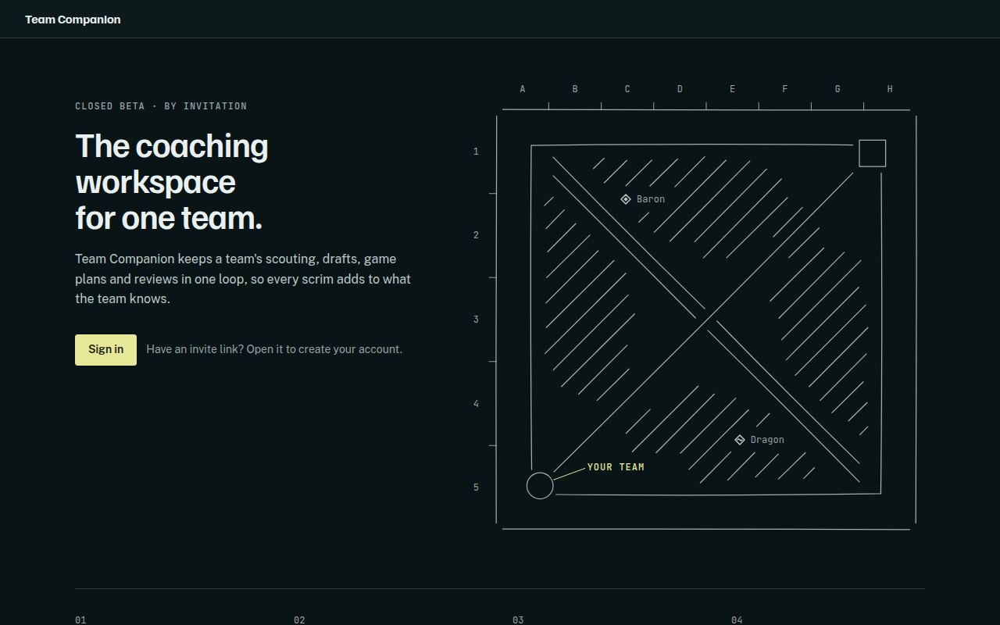

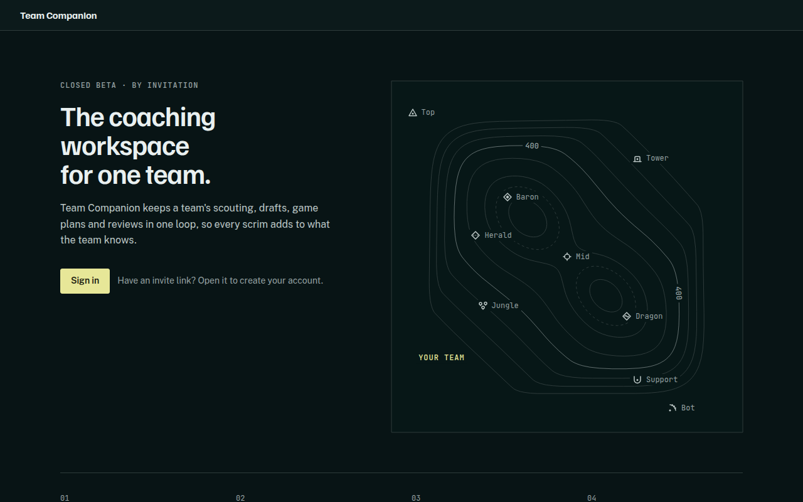

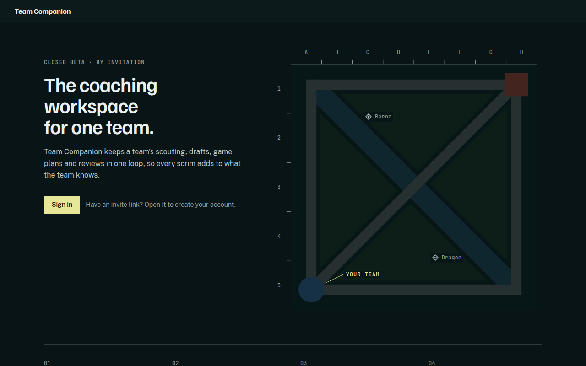


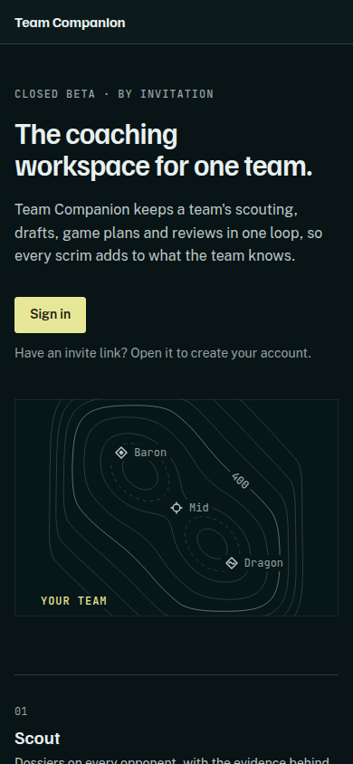

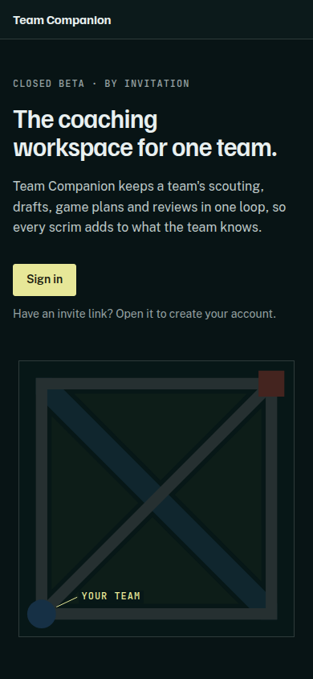

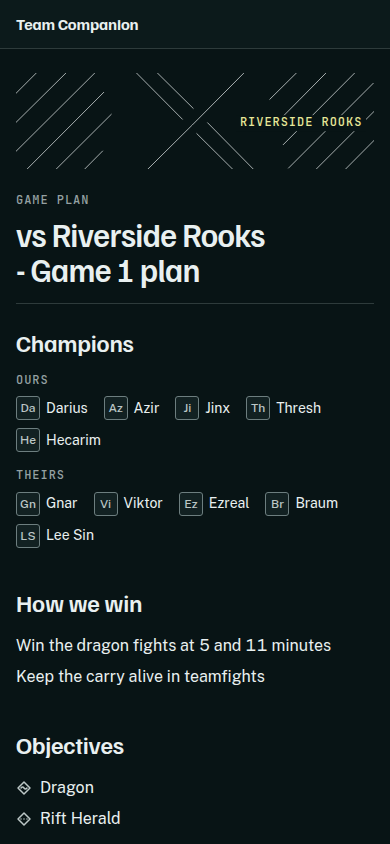

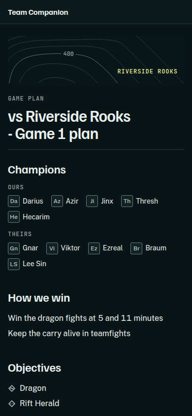

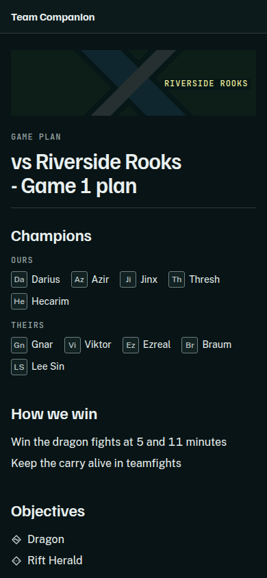

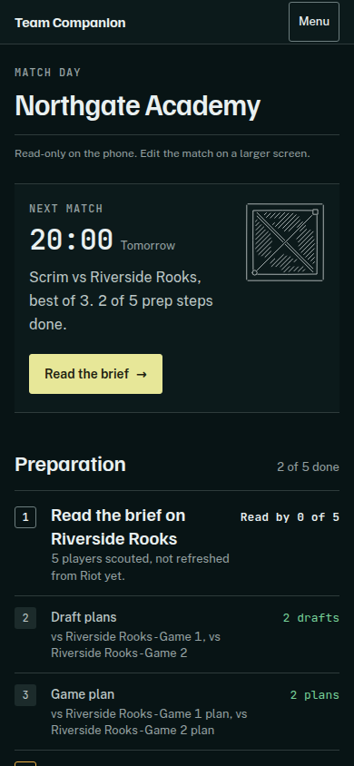

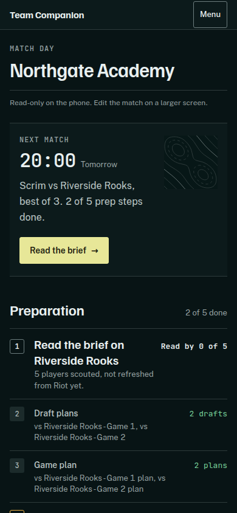

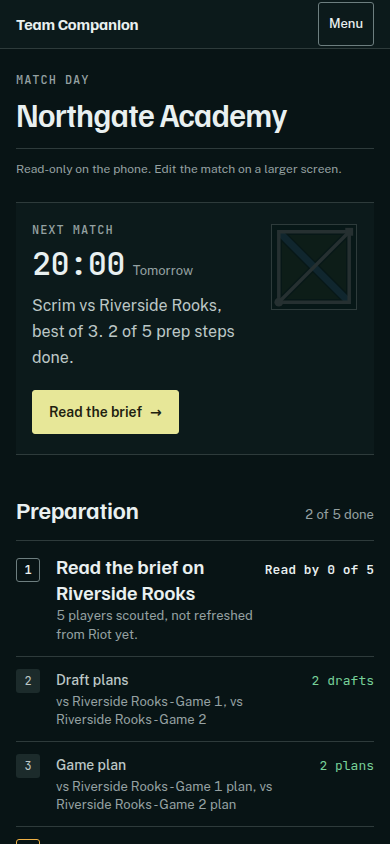
Marks
Nine original marks (five roles, objectives), atelier PASS after the fix pass. Always beside their word, hidden from screen readers.

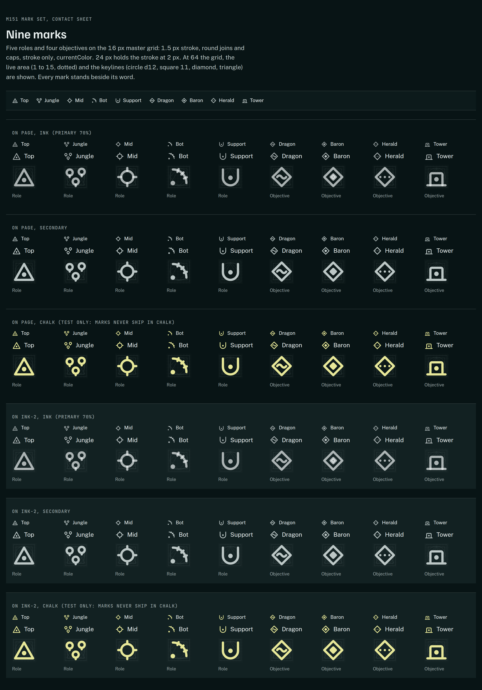
Lock-in (draft pick slot)
220 ms bar drawn from the slot edge, chalk then outline. The 390 strip has the atelier's fix (name and role stacked below 640 px); the 1280 strip was captured before that fix.

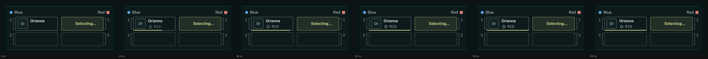


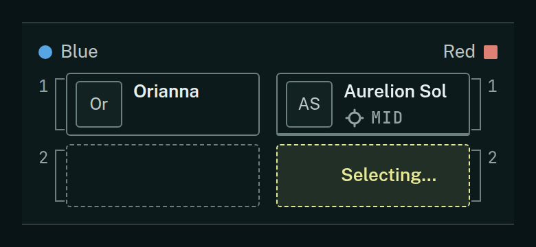

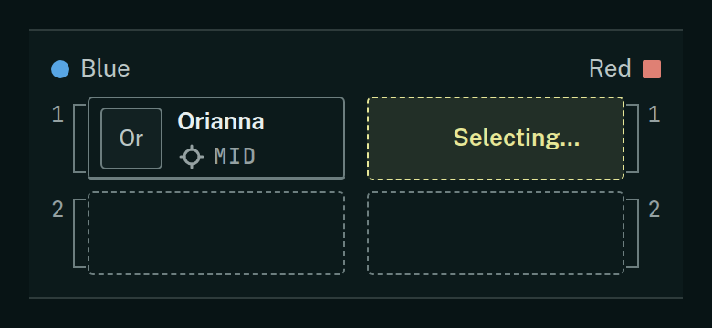
Result stamp
Static at first paint (atelier ruling); the brief asked for "drawn once".

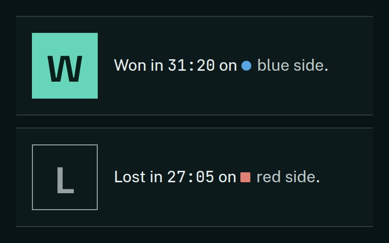

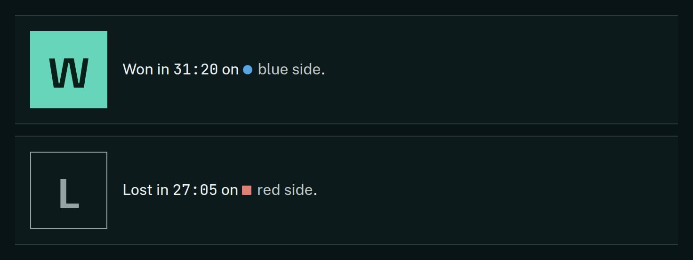
Open Graph cards (1200×630)
Static per treatment; a shared link's card never carries the token or any plan content.


C paper still
A light "paper" share page. Chalk becomes deep olive; the danger hover would need a rule change.

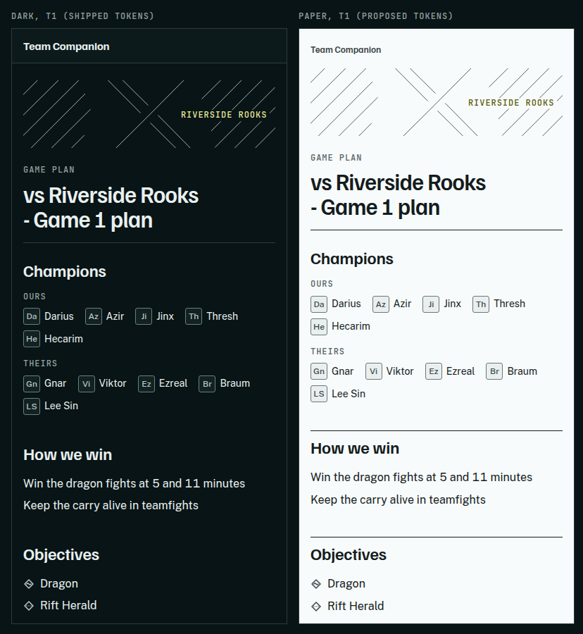

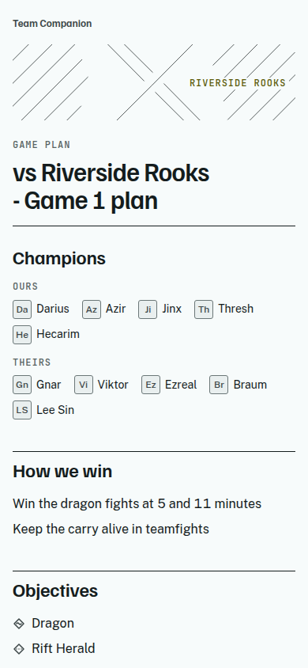
Context
REPORT-R0.md · references.md · critique-marks.md · critique-r0-t1.md · marks-template.pdf